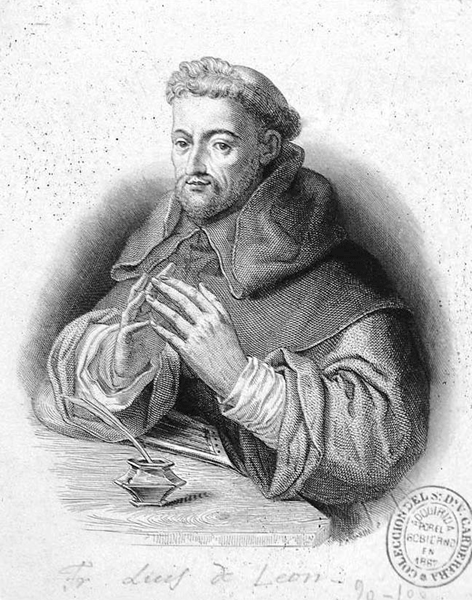

Fray Luis de León por Adolphe Varin [1821-1897]
Col. Biblioteca Nacional de España
Nacido en Cuenca y descendiente de hidalgos de origen judío, además de haber sido el poeta del estoicismo, la serenidad interior, la búsqueda de la armonía y la entrega a la voluntad divina, fue también un reconocido filólogo, traductor, catedrático y editor; encargado, por ejemplo, de la publicación de las obras de santa Teresa de Jesús en 1588. A los catorce años se trasladó desde Madrid a Salamanca para iniciar estudios, donde ingresó a la orden de los agustinos, profesando como fraile en 1544. Bachiller de Toledo y Maestro en Teología de Salamanca, sufrió, al igual que sus antepasados, la persecución del Santo Oficio, como consecuencia de la traducción de fragmentos de la Biblia, principalmente el Cantar de los cantares. Encarcelado en Valladolid en 1572, ideó en su celda, como lo haría también su alumno san Juan de la Cruz, parte de su más importante obra poética como De los nombres de Cristo y Canción a Nuestra Señora. Libre de cargos en 1576, recuperó su oficio de catedrático en Salamanca y escribió obras didácticas de gran aceptación como La perfecta casada. En 1631, cuarenta años después de su muerte, Francisco de Quevedo editó e imprimió por primera vez sus obras. “El hombre más callado que se ha conocido”, dijo de él el pintor andaluz Francisco Pacheco.